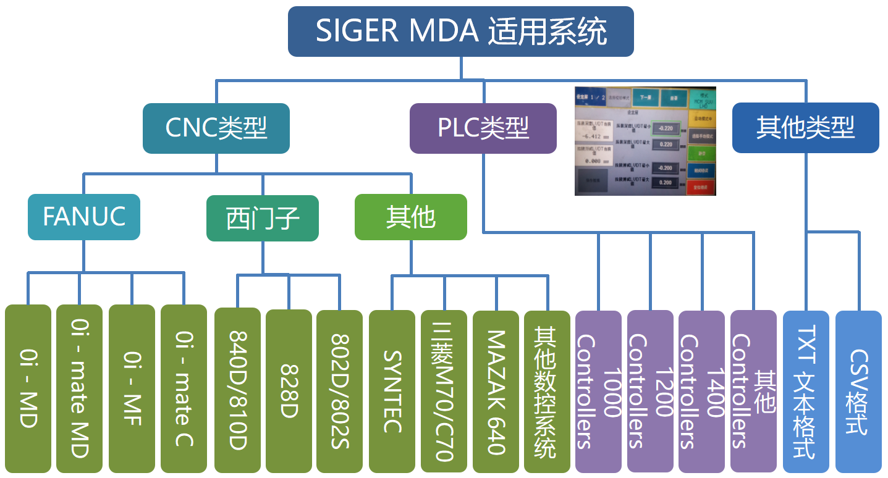
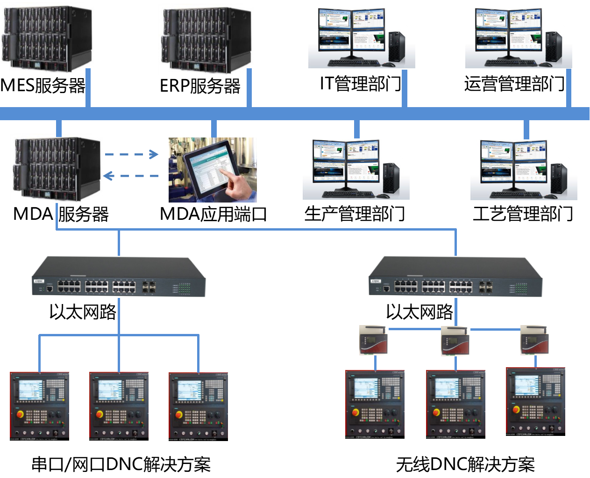
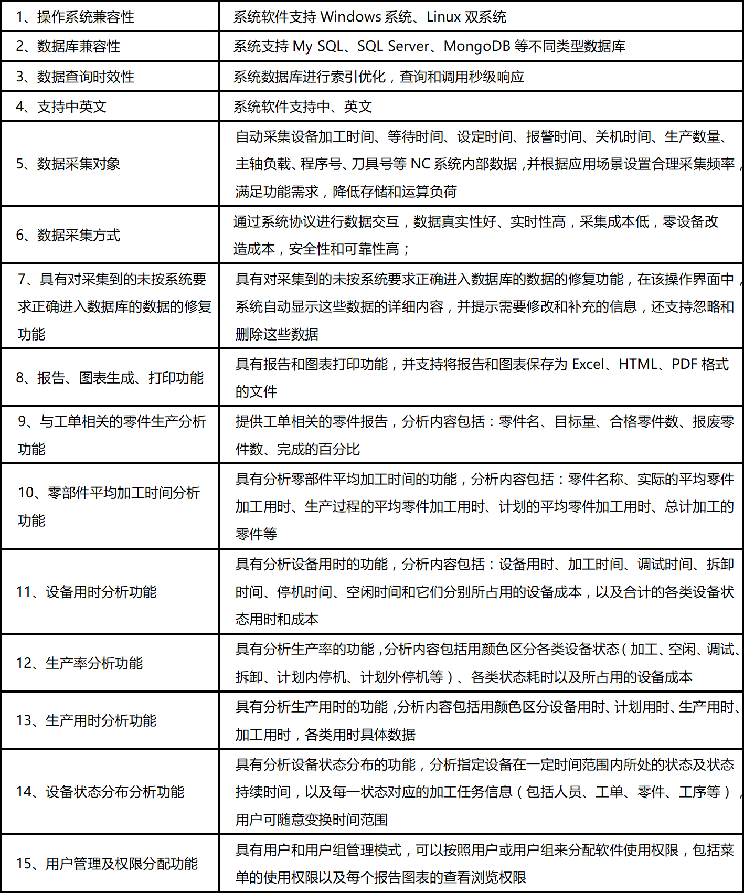
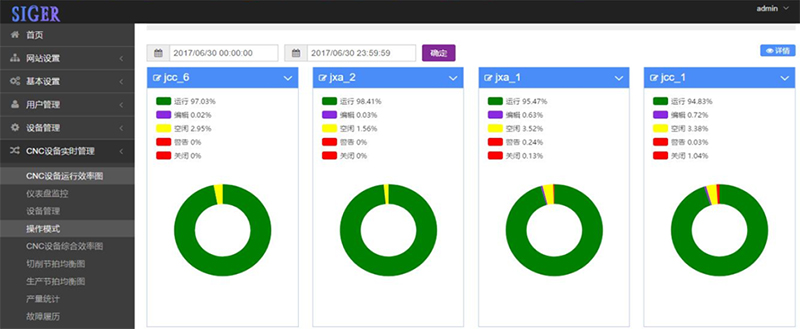
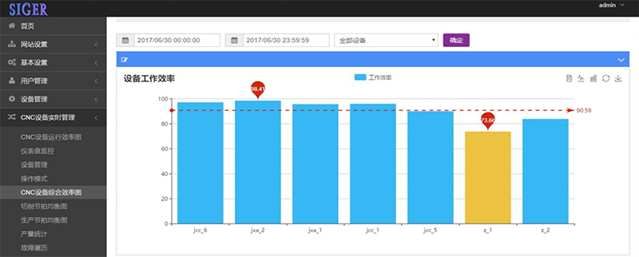
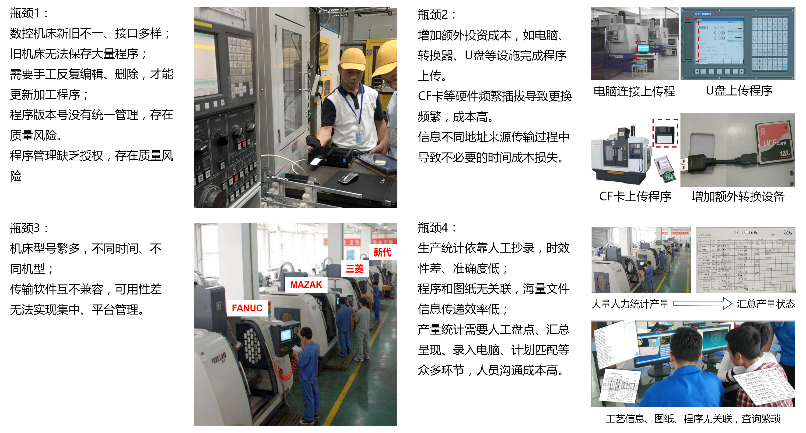
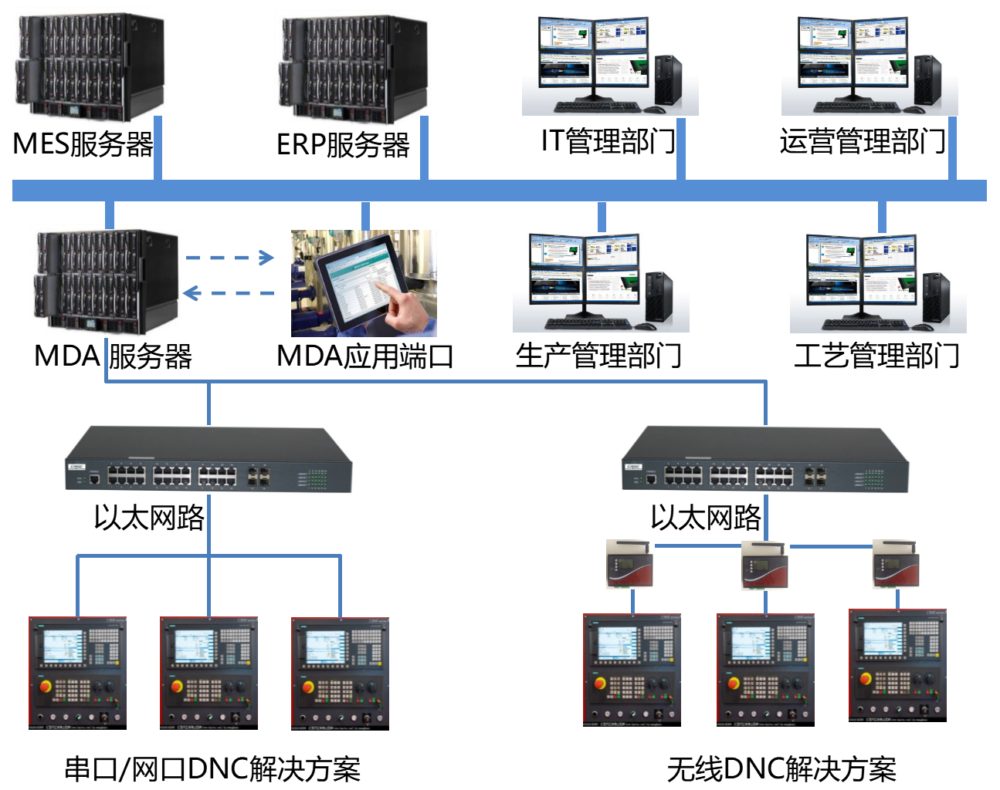
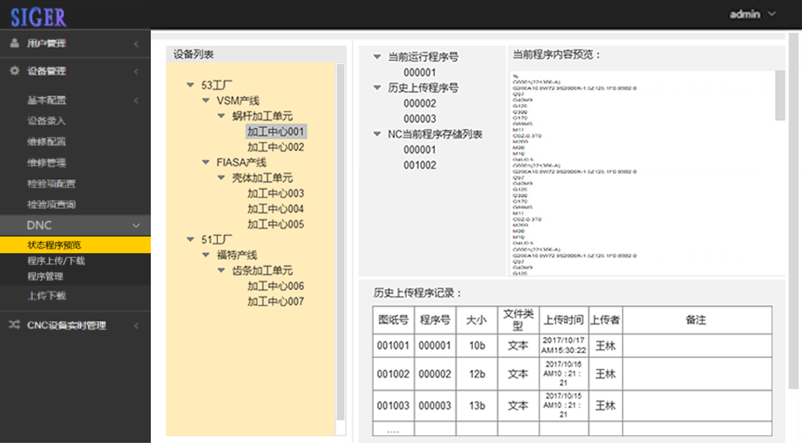
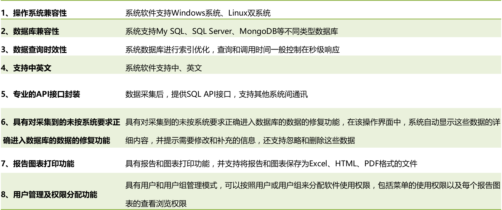

SIGER 数字化工厂
西格数字化工厂解决方案，以机联网为基础，结合计算机以太网路和集成管理计数，完成机加工中心的集中管理，是智能工厂的重要基础；基于机联网管理，西格数据提供以下模块服务：数控机床数据采集服务（MDA）、数控机床联网管理服务（DNC）、刀具加工实时监控与预测服务、设备智能维护管理服务、质量数据智能管理服务。
一、SIGER MDA 制造系统数据采集系统
SIGER MDA (Manufacturing Data Acquisition) 是一套基于中国制造2025对制造型生产企业智能化的需求，为实现生产线运行状况可视化、报表生成定制化自动化，满足制造过程深度分析对制造过程中高频数据（毫秒级别）采集的需求，而提供基于机联网的制造过程多维数据高频采集和分析的软硬件一体化解决方案。
SIGER MDA 西格制造系统数据采集系统（MDA），是基于智能制造对制造型生产企业的发展需求，以客户及市场需求为导向，结合西格团队在工业过程领域以及生产制造领域多年的技术积累，开发的一套制造系统数据采集系统。系统最突出的优势是基于工业软件的兼容性以实现制造系统数据的自动化采集，广泛适应于主流数控CNC系统和多种型号PLC控制系统；同时，基于西格团队在数据分析方法、数据架构、数据处理方式等领域的经验，搭建数据采集框架，并基于该框架对客户进行定制化的报表分析和数据库关联，和其他系统如ERP、MES等完成对接。同时，我们承诺：以最高的性价比帮助客户打造最具价值、最便捷、安全可靠的生产车间的信息化管理系统。
SIGER MDA 支持系列结构：

SIGER MDA 系统基于组态软件和B/S架构开发，能够快速部署在客户服务器端，部署时间短，成本低，支持FANUC oi系列/30i/31i/32i等、SIEMENS、华中数控、新代、三菱M60/M70/M80等、兄弟、马扎克（MAZAK）、阿奇 夏米尔、OSP、罗德斯、牧野、海德汉、哈斯等CNC控制系统；同时，SIGER MDA 也能够支持主流PLC控制器通讯和数据采集。
SIGER MDA 系统结构：

SIGER MDA 系统支持网口、串口通讯；同时，系统支持有线和无线采集两种方式；数据采集结构以车间级应用和公司级应用为出发点，定义合理的数据库结构支持两大层级应用需求。
SIGER MDA 系统功能介绍：

制造型企业存在哪些生产管理瓶颈？
制造过程由大量的设备构成，由于日渐增长的设备数量，除了在程序传输和管理上的问题外，目前国内大部分制造企业的生产瓶颈在生产设备的管理以及运行效率管理方面。
SIGER MDA 基于设备内部实时数据，提供生产现场运营状况展示看板及报表导出功能，通过对生产现场数据精准的分析和展示，帮助企业管理层、生产部门、质量部门和设备管理部门第一时间了解生产线的运行情况，挖掘隐形改进空间，帮助企业管理者针对市场需求做出快速有效决策，提高设备利用率，提高产能和质量，从而真正实现生产制造的降本增效。
常见问题诸如:
- 设备运行状态无法及时获得，信息不透明，无法及时调动资源对生产过程进行维修和改进。
- 无法实时掌握目前企业制造订单生产完成情况，是否能够按时交货，以及订单的生产进度。
- 生产线日报、周报占用员工大量工作时间，且数据可靠性差，缺乏追溯性，无法为分析提供相应数据依据。
- 无法实时自动的获取制造车间设备工位的当前状态以及各设备工位的生产利用率状况，没有可靠数据的支撑来制定改善和提高设备利用率的解决方案。
- 生产设备工作状态和状态对应的生产任务信息和相关人员信息不明。
- 无法得到设备全局设备效率分析，时刻掌握并有效的管理设备生产效能，无法找到影响生产效率的瓶颈。
- 设备报警无法及时通知到关键人员，没有及时处理，没有对报警响应时间以及报警解除时间进行数据化分析，无法通过有效管理从而减少停机事件的发生。
- 设备使用时间分布不明，计划用时和生产用时的实际耗费时间无法对比，无法进行有效控制。
- 工序、零件、工单等加工任务信息在设备上的用时情况不明。
- 无法对生产过程中停滞的原因及耗时进行计算，没有和成本挂钩。
- 设备工位信息无法与人员和班组等信息进行挂钩统计分析。
SIGER MDA 基于设备数据实时采集和实时分析系统，帮助客户有效解答这些问题，帮助车间管理到零件生产的每一个细节。帮助生产管理人员随时随地的查看车间生产的情况，实现远程监控；设备停机时间过久马上以邮件或者短信方式通知到相关人员，第一时间处理设备故障停机。从而实现车间生产过程透明化，构建数字化工厂，帮助相关人员快速决策，提高生产效率。
为何选择SIGER MDA 构建您的数字化工厂？
广泛适用的API接口：
SIGER MDA 系统解决方案是开放式的，基于设备原有系统通讯展开，且易于安装；基于B/S架构的数据采集方式，一台安装完成，即可实现对整个车间的全覆盖，安装成本低，安全稳定性高，广泛适用于：
- FANUC数控系统（网口/串口）
- 三菱数控系统（网口/串口）
- 新代数控系统（网口/串口）
- 华中数控数控系统（网口/串口）
- Brother数控系统（网口/串口）
- 西门子数控系统（网口/串口）等
同时，SIGER MDA 系统为客户提供直观的、能够反映运营管理过程的关键KPI可视化指标，以及其他客户管理层提出的关键指标，帮助企业简化过程管理，如设备综合运行时间图、单元工作效率图、加工时间图、综合节拍图、产量统计等：


SIGER MDA 将帮助您实现：
- 帮助实时统计加工数量，对工单的执行情况进行实时汇总分析，和ERP进行完美对接，减少大量人工报表，实现无纸化生产
- 实现车间作业的透明化，得到制造过程中真实的生产数据，并实时反映出生产过程中的各种问题，增加问题曝光率；
- 提高各信息传递效率，及时曝光设备运行过程中的问题和持续时长，即时解决问题，减少中间环节不必要的浪费，更好地组织人员、设备机台、物料、工艺、生产环节等资源开展生产，实现协同生产；
- 实时自动的获取制造车间设备工位的当前状态以及各设备工位的生产利用率状况，监控生产现场产量的达成，做到目视化管理
- 提升对数控设备的全面了解及车间现场的实时使用状况的收集和统计分析能力，拥有多种电子化图报表帮助生产现场管理人员提供科学管理和决策依据
- 可以规范企业的管理流程，计算机系统方便、快捷地实现各种统计查询，生产管理层与生产现场层可实现及时的信息交流
- 停机时间成本的统计，帮助企业找到设备闲置的真正原因，通过设备停机时间的长期报告查询，可以帮助企业设备管理部门做好各设备预防性的维修维护准备，有效防止设备突发故障给生产制造带来的停滞影响
- 停机时间和维修策略CMMS系统可有效对接，评价机床维修有效性及可靠性表现。
二、DNC设备数据管理
SIGER DNC (Distributed Numerical Control) 基于以太网通讯技术，实现设备的数控系统与上层控制计算机的互联互通，是制造型生产企业现代化生产车间实现自动化、智能化管理的基础。
SIGER DNC 设备联网管理系统，通过设备数控系统与控制计算机的连接，实现数控程序的远程上传、下载、关联、调用、回传等功能，并且在控制计算机端可以实时记录数控程序的变化点，实现数控程序的追溯，所有的操作都基于授权完成数据的流通，让企业数控程序的管理应用更为规范。西格DNC提供SQL API接口，支持ERP/MES及其他系统对接。
机加工现状：
- 设备自动化程度不断增高
- 设备精度不断增高
- 设备附加值不断增高
- 客户需求多样化、频繁换型
- 刀具管理自动化程度高
机加工发展趋势：
传统机械加工管理瓶颈：

西格DNC几乎兼容所有系统，如FANUC、Siemens、三菱、Brother、牧野、新代、Mazak、海德汉等主流数控系统；同时，支持多种通讯方式，如TCP/IP、RS232、CF卡转网口等多种通讯方式，提供完整的数据通讯解决方案，同时基于CNC程序集中精益管理方式，能够有效管理程序版本、上传时间、程序删除、程序上传与下载等管理功能；西格DNC提供SQL API接口，支持ERP/MES及其他系统对接，以解决传统机械加工管理瓶颈。
DNC网络拓扑结构：

西格DNC用户端-程序状态预览：

西格DNC机联网管理系统功能介绍：

DNC管理帮助客户实现：
- 灵活的程序管理
- 具备客户化自定义的程序管理功能。可以将程序与呼叫码，产品名称，工单，工序，设备信息等进行关联管理；并且可以记录数控程序的变化点，实现程序的版本追溯。
- 远程请求，远程控制管理
- 可以实现服务器端无人值守的情况下，在设备端通过简单的操作实现远程调用程序，也可以通过客户端软件进行程序下发操作。
- 多系统兼容
- 基于通讯系统兼容性，提供标准API接口，程序通过PC直接传输到NC端，支持多种转换方式，几乎兼容所有NC系统类型。基于SQL API接口，又进一步支持该软件和其他系统如MES/ERP对接，提高工厂数字化程度。
- 数据传输高效、简单
- 基于工业以太网提供数据传输通道，同时，省去大量的硬件转化成本，传输效率高、成本低。数据转化问题通过标准的数据调用，一次性解决，支持扩展，为客户节约大量硬件投入。
“SIGER 刀具管理系统”60天
无理由退款！
100%预测刀具寿命！详情请来电咨询。
西格刀具智能管理系统通过采集刀具负载数据、电流数据、历史趋势数据通过云端大数据分析实时监控刀具状态与计算刀具剩余寿命，目前已有昆山富士和、无锡约克等大型企业投入使用，实践证明预测准确率99%以上。能够助您大幅度节省刀具开支，避免断刀再加工出不良品，进而节省人力提高质量。
“SIGER 设备管理系统”60天
无理由退款！
支持设备移动化管理！详情请来电咨询。
西格设备智能管理系统特有移动化管理功能，支持应急报修定期维护，所有消息可推送到微信、邮件、短信等端口，让设备报修响应效率飙升！维修工单可追溯，设备管理分权限，维修指标自动分析，让您的管理过程更简单！更有效！